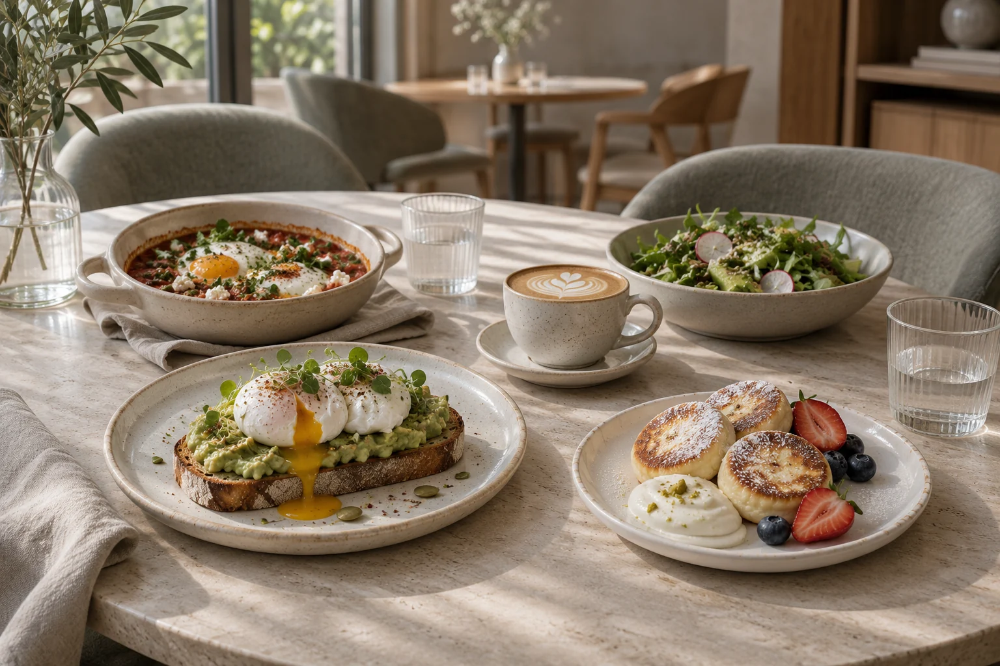

К меню

Завтраки · основные блюда · кофеОт первой чашки
до долгого ужина
Простые продукты, свежий взгляд и место для ваших разговоров. Заглядывайте позавтракать, оставайтесь на обед или соберите друзей вечером.
Ваш стол уже ждёт
До встречи
в «Сезоне»